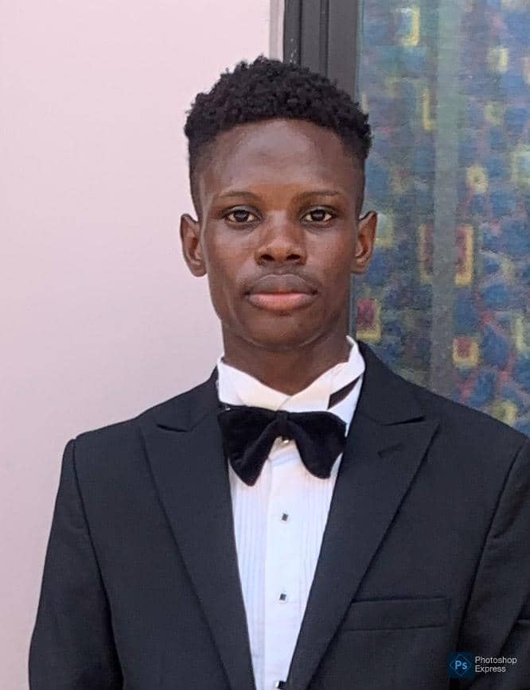

John Momoh | WDD 130
Hello! My name is John Momoh, and I am from Lagos, Nigeria. I am currently pursuing a BSc in Software Development at BYU-Idaho, where I focus primarily on web development, though I also have an interest in broader software engineering practices. One of the aspects I enjoy most about coding is the constant opportunity to learn. Each project offers a new challenge, whether it's mastering a new framework, implementing efficient algorithms, or ensuring that a user interface is both functional and visually appealing. Outside of coding, I enjoy engaging with communities, particularly those related to my faith. I take part in a student fellowship, where I contribute by building websites and managing technical tasks for our gatherings. It's a fulfilling experience that allows me to apply my skills in a meaningful way, while also fostering a sense of community. My long-term goal is to become a full-stack developer with a deep understanding of both front-end and back-end systems, as well as cloud computing and cybersecurity.